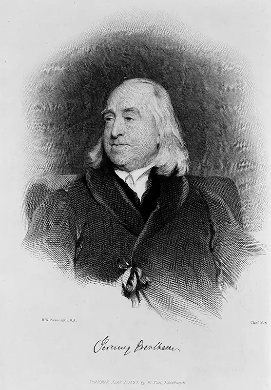
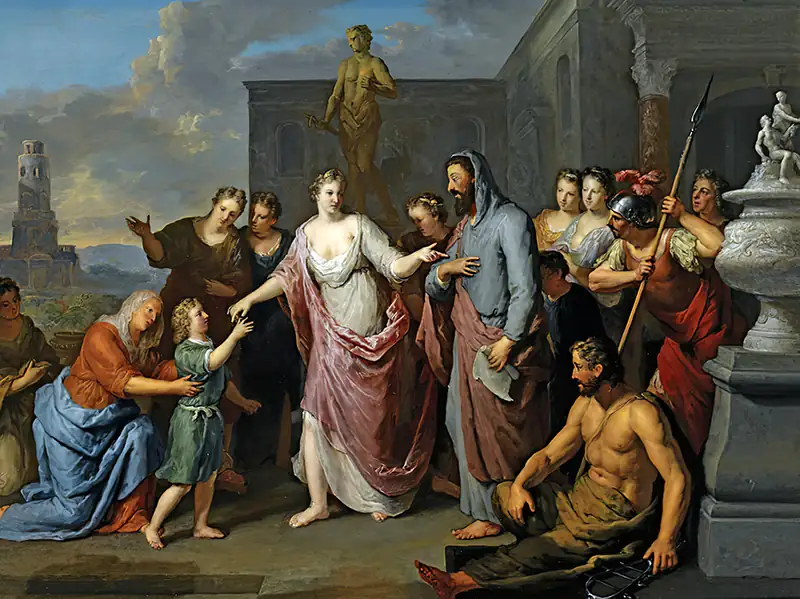
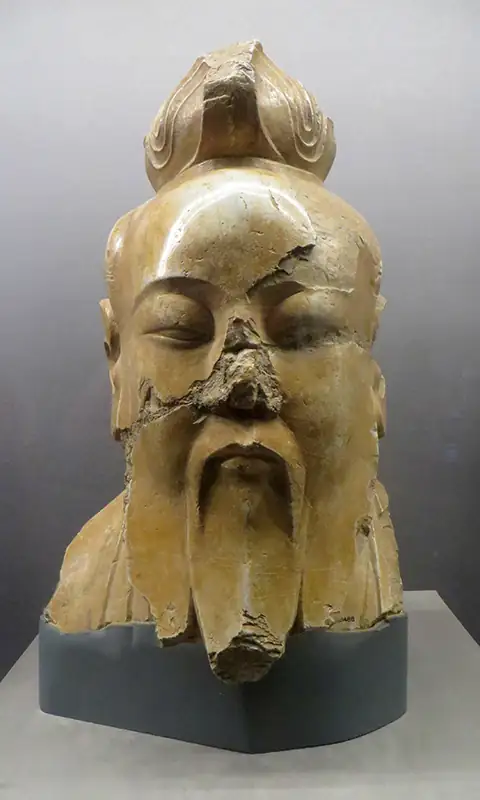

Chapter 9: Normative Moral Theory¶
Introduction¶
How do you decide what to do when you face a difficult moral dilemma? When you are unsure what is right in a situation, what do you rely on, if anything, to guide you so you can do the right thing? Say, for example, you have borrowed a friend’s car. You want to fill the gas tank before returning the car, but you don’t know what fuel the car uses. You are in a hurry and can’t reach your friend on the phone. What do you do? Do you return the car without filling it up? Do you take a wild guess or ask a person at the gas station and hope the fuel you pick doesn’t damage the engine?
What you might need is a good normative moral theory. Normative ethics focuses on establishing norms and standards of moral conduct for effectively guiding our behavior. A normative moral theory is a systematized account of morality that addresses important questions related to effectively guiding moral conduct. By the end of this chapter, you will be able to apply different types of normative moral theories to help guide your decisions at gas stations and elsewhere.
9.1 Requirements of a Normative Moral Theory¶
Learning Objectives
By the end of this section, you will be able to:
- Identify the meaning and purpose of normative moral theory.
- Distinguish between the three areas of ethics.
This section focuses on the how normative moral theories relate to other branches of ethics, examines the requirements of normative moral theories, and introduces three major types of moral theories.
Three Areas of Ethics¶
Ethics is the field of philosophy that investigates morality and engages in “systematizing, defending, and recommending concepts of right and wrong behavior” (Fieser 1995). It is divided into three main areas—metaethics, normative ethics, and applied ethics—each of which is distinguished by a different level of inquiry and analysis.
Metaethics focuses on moral reasoning and “whether morality exists” (Dittmer 1995). It is concerned with questions that are more abstract, ones that explore the foundations and assumptions related to our moral beliefs and practice. It attempts to understand the beliefs and presuppositions connected to morality and moral deliberation. Metaethics explores, for example, where moral values originate, what it means to say something is right or good, whether there are any objective moral facts, whether morality is (culturally) relative, and the psychological basis for moral practices and values.
Normative ethics focuses on moral behavior, on what we should do. It thus deals with questions concerning human agency, responsibility, and moral evaluation. Normative ethics attempts to establish criteria or principles for identifying norms and standards to guide correct behavior. Philosophers offer systematized accounts of morality that provide standards and norms of right conduct. There are three main approaches to normative moral theory: consequentialist, deontological, and virtue ethics. Each approach differs based on the criterion (consequences, duty, or character) used for determining moral conduct.
Applied ethics focuses on the application of moral norms and principles to controversial issues to determine the rightness of specific actions. Issues like abortion, euthanasia, the use of humans in biomedical research, and artificial intelligence are just a few of the controversial moral issues explored in applied ethics, which is covered in the next chapter.
A normative moral theory provides a framework for understanding our actions and determining what’s right. A fully worked out moral theory often addresses all three areas of ethics (metaethics, normative ethics, and applied ethics), but its aim will be establishing and defending the norms of conduct it recommends.
Three Coherent Frameworks for Understanding Morality¶
A moral theory should make it possible to effectively guide behavior by providing a framework for determining what is morally right and arguments justifying its recommendations. Such a framework must be based on a logical foundation for its principles and provide consistent recommendations. It should, in short, make sense.
This chapter examines three distinct moral framework approaches to normative ethics: consequentialist, deontological, and virtue. Consequentialism looks at an action’s outcome or consequences to determine whether it is morally right. Consequentialists think an action is right when it produces the greatest good (e.g., happiness or general welfare). Deontology focuses on duties or rules to determine the rightness of an action. Deontologists argue that an action is right when it conforms to the correct rule or duty (e.g., it is always wrong to lie). Virtue ethics focuses on character and the development of the right habits or traits. Virtue ethicists argue that right action flows from right character. These three main approaches are distinguished by the criterion (i.e., consequences, duty, or character) used for determining moral conduct.
9.2 Consequentialism¶
Learning Objectives
By the end of this section, you will be able to:
- Identify the meaning and purpose of the consequentialist approach.
- Summarize Mohist and utilitarian interpretations of consequentialism.
Most people make at least some decisions based on the likely consequences of their actions. You might, for example, appeal to costs and benefits to justify a decision. For example, you might consider the happiness your friend will feel when discovering that you’ve filled the gas tank (a benefit) and weigh that against the price of a tank of gas (cost). In doing so, you are analyzing consequences to yourself and to your friend. Consequentialists, however, ask you to take a wider view. In consequentialism, an action is right when it produces the greatest good for everyone. An agent is tasked with assessing possible consequences to determine which action will maximize good for all those who might be impacted. This section looks at two consequentialist approaches, Mohism and utilitarianism.
Mohism¶
The Warring States period in ancient China (ca. 475–221 BCE) was a period of widespread social unrest and discord, one characterized by warfare, suffering, and a fractured society. Thinkers in ancient China responded by exploring ways to unite people and discover (or rediscover) moral norms and standards that would promote a better life and social harmony. Philosophies like Mohism, Confucianism, and Daoism were developed, making it a period marked by intellectual and cultural expansion. These philosophies, while different in important respects, are similar in that each is born as a response to the social disharmony and widespread suffering experienced during the Warring States period. Each one shows a desire to facilitate and foster change in order to overcome social challenges and improve the lives of the people.
Very little is known about the founder of Mohism, Mo Di or Mozi (ca. 430 BCE). He lived around the time of Confucius (ca. 479 BCE), the founder of Confucianism, and Laozi, the founder of Daoism. Mozi, like Confucius and Laozi, was considered a great teacher. He and early Mohists sought to establish rational, objective standards for evaluating actions and establishing ethical norms.
Four Concepts of Mohist Ethical Theory¶
Four interrelated concepts are at the heart of Mohist ethical theory: morality, benefit, benevolence, and care. Morality (yi) is determined by benefit (li), which shapes how we understand our duties and define what is right. Benefit (li) is defined loosely as a set of material and social goods, including virtues and practices that strengthen social order. Benefit, in turn, rested on the concept of benevolence or kindness (rèn), which requires that we look outside our own interests and treat others with care (ài). Practicing kindness is crucial for promoting social order and fair treatment. Mohists believed that we are more likely to achieve social stability and general welfare when we focus not simply on ourselves, but the betterment of others and the community.
Mohists thought ethical norms should be established by looking at what increases overall benefit. To this end, Mozi argued that we should promote the immediate welfare of individuals and consider the welfare of all when acting. If people are suffering or in need now, it makes sense, Mozi thought, to address those issues first.
As the theory developed, Mohists also came to associate benefit with happiness or delight (xǐ). However, most essential to Mohism is the value of impartial care of all, or universal love. They thought we should treat everyone impartially and that we shouldn’t give preference to some people’s welfare over others. Mohists opposed the rulers and elites during the Warring States period who had focused only on their own pleasure and gain to the detriment of everyone else.
Normative Practices: The Ten Doctrines¶
There are ten doctrines that form the core of early Mohism. These ten doctrines correspond to Mozi’s original work, and they were treated as central even by later Mohists who developed and expanded upon early Mohist thinking. The ten doctrines are normally split into five pairs as follows:
- “Promoting the Worthy” and “Identifying Upward”
- “Inclusive Care” and “Condemning Aggression”
- “Moderation in Use” and “Moderation in Burial”
- “Heaven’s Intent” and “Understanding Ghosts”
- “Condemning Music” and “Condemning Fatalism”
The “Promoting the Worthy” and “Identifying Upward” doctrines highlight the Mohists’ concern for a meritocratic system. They believed that an individual should be appointed to a position based on their performance and moral goodness. These officials should serve as models to all. Mohists assumed that people are motivated to act in ways that conform to their beliefs about what is right. They therefore believed that people needed proper moral education informed by rational, objective moral standards. Once people possess the proper knowledge, they conform their behavior accordingly. This, in turn, would address the social upheaval and disharmony that plagued their world. Mozi realized that if people adopt the same morality, they will use the same standards to judge their own actions and the actions of others, which will improve social order and harmony.
The “Inclusive Care” and “Condemning Aggression” doctrines affirm the importance of considering and caring for everyone equally. They reinforce the idea that it is not just the individual’s own benefit that matters, but the benefit of all people. Mohists therefore condemn aggression because others are harmed in the pursuit of personal benefit. During a period in which warlord battled against warlord, Mohists condemned these attempts at military conquest as selfishly immoral.
Mohists promoted the practices of “Moderation in Use” and “Moderation in Burial.” They rejected lavish funerals, customs, and practices that were wasteful. Resources should be used to the benefit of individuals and society. They viewed excessive displays of wealth that only benefit the few as selfish.
Mohists use the ideas of “Heaven’s Intent” and “Understanding Ghosts” to argue that there is an objective moral world order that individuals and society should hasten to emulate. Heaven acts as their principal standard for evaluating and understanding our moral responsibilities.
Early Mohists, in particular, also saw heaven as way to motivate individuals to act selflessly, as moral deeds would be rewarded, whereas immoral ones would be punished. Later, however, Mohists seemed to abandon or at least put less emphasis on this appeal to heaven to justify ethical norms and principles, favoring a greater emphasis on rational argumentation.
Finally, Mohists promoted the norms of “Condemning Music” and “Condemning Fatalism.” The Mohist views on music stemmed from their condemnation of the powerful for being wasteful when they enjoyed lavish displays and luxuries. They felt those with wealth had a responsibility to others and should behave morally.
Mohists also believed in social mobility, such that capable, moral individuals should rise. Their support of meritocracy further underscores a belief that the individual has the power to change, to direct their own life, and to determine their own path. The Mohists condemn fatalism because it suggests that human effort is futile and undermines Mohist goals of achieving social order and a large and economically thriving population. Mohists believed that our lot in life is not set in stone, nor does fate determine our path (Fraser 2020).
Utilitarianism¶
The term utility means “useful” or “a useful thing.” Utilitarians argue that what is right is whatever produces the most utility, the most usefulness. The question, then, is how do we define usefulness? The utilitarian’s answer is that something is useful when it promotes happiness (or pleasure). According to utilitarians, we have a moral obligation or responsibility to choose the action that produces the most happiness.
Jeremy Bentham and John Stuart Mill¶
Jeremy Bentham (1748–1832) was the first philosopher to articulate the principle of utility. James Mill (1773–1836), an economist, political philosopher, and historian, was Bentham’s friend and a follower of utilitarianism. James Mill naturally raised his son to be a utilitarian as well. John Stuart Mill (1806–1873) received a rigorous homeschooling under his father’s tutelage. Scholars in the fields of philosophy, political science, and economics continue to apply the insights of Bentham and Mill to this day.

The Principle of Utility¶
The principle of utility states that “actions are right in proportion as they tend to promote happiness; wrong as they tend to produce the reverse of happiness” (Mill [1861] 2001, 7). Utilitarians argue that moral conduct is conduct that maximizes the good (or produces the most value). In economics, for example, utility is defined as the amount of enjoyment a consumer receives from a good or a service. You might, for example, choose between buying an oatmeal raisin cookie and a chocolate chip cookie. If you like them both equally, the right action would be to compare the prices and buy the cheaper one. Utility, however, is not always so easy to determine, particularly in more complex situations.
Connections
The chapter on Value Theory covers the topic of well-being in greater detail.
The Trolley Problem¶
Trolley problems are classic thought experiments first invented by Philippa Foot and widely employed by ethicists to explore moral reasoning (Foot 2002). Consider one such trolley problem, referred to as the bystander case. Imagine you are standing by trolley tracks observing the trolley cars in action. To your horror, you realize that one of the trolley cars is out of control. If nothing is done, the trolley will continue down the track, killing five workers who are performing track maintenance. You happen to be standing near a lever you can pull that will divert the trolley. If you divert the trolley, you will change its path so that it takes a different track where only one worker is performing maintenance. Is it morally permissible to pull the lever?
The simplest utilitarian response would be “yes.” You would save the lives of four workers. The right decision involves making a simple quantitative calculation: five workers minus one worker is four workers. So the right, moral decision is to divert the trolley. Yet, John Stuart Mill recognized that not all questions of utility can be answered quantitatively.
Higher and Lower Pleasures¶
Raised to continue in the footsteps of Bentham and his father, John Stuart Mill had a nervous breakdown as a young man. Mill emerged from the crisis with new ideas about utilitarianism, including the realization that Bentham’s characterization of pleasure could be improved upon (Durham 1963). He realized that pleasures differ both quantitatively and qualitatively. Mill identified what he calls higher and lower pleasures to distinguish between different qualities of pleasure. With his revised and more nuanced account of pleasure, Mill set out to develop Bentham’s earlier formulation of utilitarianism. He refined the calculus and assigned a greater significance or preference to higher-quality pleasures (e.g., mental pleasures).
Mill distinguished between different (higher and lower) qualities of pleasure in his formulation of utilitarianism. What he called higher pleasures are those pleasures associated with the exercise of our higher faculties. For example, higher pleasures are often associated with the use of our higher cognitive faculties and/or participation in social/cultural life. Lower pleasures, in contrast, are those pleasures associated with the exercise of our lower faculties. For example, lower pleasures are (basic) sensory pleasures like those experienced when we satisfy our hunger or relax after difficult physical activity. As Mill saw it, we have higher cognitive faculties (e.g., reason, imagination, moral sense) that distinguish us from other living things. Our higher cognitive faculties give us access to higher pleasures, and these pleasures are a defining feature of human life.
It is better to be a human being dissatisfied than a pig satisfied; better to be Socrates dissatisfied than a fool satisfied. And if the fool, or the pig, are of a different opinion, it is because they only know their own side of the question. (Mill [1861] 2001, 10)
Mill’s claim that “it is better to be a human being dissatisfied than a pig satisfied” suggests that it is better to be dissatisfied and aware that you are capable of experiencing different qualities of pleasure than to forfeit the higher pleasures merely for the sake of basic satisfaction.
Some Mill scholars have even suggested that our dissatisfaction is a potential source of higher pleasures. In Mill and Edward on Higher Pleasures, Susan Feagin (1983) points out that dissatisfaction stems from a recognition that our situation could be improved. Feagin argues that our ability to formulate plans to improve our situation is a source of higher pleasure. Dissatisfaction motivates us to improve things and pursue a better world and life.
The Greatest Happiness Principle¶
To apply the principle of utility in broad social and political contexts, Mill formulated the greatest happiness principle, which stipulates that those actions are right that produce the greatest happiness for the greatest number of people. When agents (individual decision makers) approach a decision, they review and evaluate their possible actions and should choose the action that will promote the most happiness for the most people. It is not simply the agent’s own happiness that matters, but the happiness of all individuals involved or affected by the consequences produced. The “happiness which forms the utilitarian standard of what is right in conduct is not the agent’s own happiness but that of all concerned” (Mill [1861] 2001, 17). Mill argued that the right action is the one that maximizes happiness or produces the most net happiness.
Mill emphasizes the importance of putting personal interests aside. Mill writes that if an individual is faced with a decision “between his own happiness and that of others, utilitarianism requires him to be as strictly impartial as a disinterested and benevolent spectator” (Mill [1861] 2001, 17). Impartiality makes us able to assess possible consequences without giving preference to how they might impact us or those we are biased toward (e.g., friends, family, or institutions we are affiliated with). Utilitarians, therefore, strive to apply the principle in an informed, rational, and unbiased way.
Write Like a Philosopher: A Utilitarian Approach
Choose a moral dilemma you are facing or that you have faced. Devise and implement a method of calculating the greatest happiness, such as identifying all the individuals affected by your decision and estimating the impact of your decision on their happiness. Then examine and explain the assumptions that are inherent in the method you are using to calculate happiness.
Act vs. Rule Utilitarianism¶
Within this moral theory, there is a major division between act and rule utilitarianism. Act utilitarians argue that we should apply the greatest happiness principle on a case-by-case basis. Factors may vary from one situation to the next making it possible that different actions are morally right even in two seemingly similar situations. Act utilitarians believe morality requires us to maximize the good every time we act.
Some have argued that act utilitarianism is problematic because it seems to justify doing actions that go well beyond ordinary moral standards. For instance, act utilitarianism could justify a vigilante killing a person, an action that is contrary to our normal sense of right conduct, if it saves lives and so maximizes happiness. However, if many people were to take the law into their own hands, the long-term consequence would be to undermine the security of all individuals within society. Consider also the case in which a jury or a judge were to find an innocent person guilty and sentence them to prison in order to avoid widespread riots. In this particular case, such an act would increase happiness but reduce the overall level of trust in the judicial system.
To avoid such problems, rule utilitarians argue that we should apply the greatest happiness principle not to each act, but instead as a means of establishing a set of moral rules. We can test possible moral rules to determine whether a given rule would produce greater happiness if it were followed. Assuming the rules pass the test, they argue that following such rules will maximize happiness and should be followed. Rule utilitarians think this list of rules can be modified as needed by reexamining each one through application of the greatest happiness principle. However, it is not easy and may not be possible to formulate all the exceptions to each rule.
Character and Intent in Utilitarianism¶
For utilitarians, the only intrinsic value is happiness. Utilitarians believe that no action in itself is right or wrong, nor is it right or wrong based on an agent’s character or intent. Only the scope of consequences should be considered when assessing the rightness of an action. An agent might intend to produce certain consequences when they act, but what they intend may not come about or their action might produce other unintended consequences. If an action produces consequences a person didn’t intend or foresee and so does harm, they are still morally at fault, even if at the time it seemed reasonable to assume those outcomes wouldn’t happen. For utilitarians, an agent’s intent and character are not morally relevant factors. In this, utilitarianism differs from the other normative ethical theories that will be considered in the remainder of this chapter.
9.3 Deontology¶
Learning Objectives
By the end of this section, you will be able to:
- Identify the meaning and purpose of the deontological approach.
- Articulate the role of duty and obligation within deontological reasoning.
- Compare and contrast the Kantian and pluralist interpretation of deontology.
The word deontology derives from the Greek words deon, meaning duty, and logos, meaning the study or science of, so that deontology literally means “the study or science of duty.” Unlike consequentialists, deontologists do not evaluate the moral rightness of an action based solely on its consequences. Rightness in deontological theories is established by conformity to moral norms or rules that we have a duty to follow (Alexander 2020). Deontologists attempt to establish our moral duties, the set of rules that are morally binding, and using these we can guide our behavior and choices.
Later deontologists—for instance, W. D. Ross (1877–1971)—argue that consequences are morally relevant when considered in light of our moral duties. Ross believed that a moral theory that ignored duty or a moral theory that ignored consequences “over-simplifies the moral life” (Ross 1939, 189).
Kantian Formulation¶
Immanuel Kant (1724–1804) is one of the most important figures in modern philosophy. The first philosopher to advance a deontological approach, he has influenced contemporary philosophy significantly in areas such as aesthetics, political philosophy, and ethics.
Good Will¶
Kant argued that when we focus on outcomes rather than our duty, we prefer something of merely conditional value—beneficial outcomes—over the only thing that has unconditional value—good will, a concept that for Kant meant the decision to carry out our moral duties. Kant establishes the unconditional value of good will.
A good will is good not because of what it effects, or accomplishes, not because of its fitness to attain some intended end, but good just by its willing, i.e. in itself; and, considered by itself, is to be esteemed beyond compare much higher than anything that could ever be brought about by it in favor of some inclination. (Kant 1997a, 4:394)
When we perform an action because it is our duty (or from duty), without influence from outside, merely conditional factors, we act in a way that contributes to the goodness of our will.
Human Reason and Morality¶
Kant’s normative moral theory rests on how he defines what it means to be human. Kant argued that what separated us from other animals is our ability to think rationally. Animals are driven by impulses and so are irrational. As humans, however, we can reason, make decision independent of our desires, and so exercise agency. We can rise above animal instincts. In this sense, humans have freedom and free will. Kant used the term “good will” to refer to our will to rise above our passions and biases and act rationally.
Furthermore, through our capacity to act rationally and so exercise “good will,” we establish our value above all other (living) things. At the same time, we have a duty to act rationally—which, in Kant’s view, is to act morally. We should always act rationally because it is only through rational, moral action that we realize our freedom and affirm our worth and dignity.
Moral Laws¶
Kant believed that moral laws, or maxims, could be discovered a priori. No matter what religion we follow or culture we grew up in, we can use our reason to figure out what is right and what is wrong. We use our reason alone to arrive at the moral rules by which we should abide.
In Groundwork of the Metaphysics of Morals ([1785] 1997, 4:415–416), Kant set out to explore these moral laws by first examining common-sense morality—that is, ideas that most people share about morality, such as do not steal or do not murder. The will, Kant noted, always presents its rules in the form of commands, which he called imperatives. He divided these imperatives into two categories: hypothetical and categorical.
Hypothetical Imperatives¶
A hypothetical imperative “says only that the action is good for some actual or possible purpose” (Kant 1997a, 4:414–415). In other words, we may follow rules, such as “study hard,” “get a job,” and “save money.” But each of these commands determine only what should be done in order to achieve some (proposed) end. We say “study hard to get good grades,” “get a job to earn money,” and “save money to buy a house for your family.” Through the hypothetical imperative we establish subjective rules for acting. We use these rules regularly to navigate the world, solve problems, and pursue various ends. A hypothetical imperative is thus not a moral rule, but a means to achieve a goal—to fulfill a desire.
Categorical Imperative¶
Unlike hypothetical imperatives, categorical imperatives are universal laws that we must obey regardless of our desires. Kant writes, “For only the law carries with it the concept of an unconditional and indeed objective and hence universally valid necessity, and commands are laws that must be obeyed, i.e. must be complied with even contrary to inclination” (Kant 1997a, 4:416). Categorical imperatives are derived by reason and we have a moral duty to follow them.
Kant suggested that we derive categorical imperatives through four formulations that serve as a standard or guide to test whether our reasons for acting conform to the standard of rationality and thus moral law. The two most widely examined formulations are the universal law formulation and the humanity formulation.
The Universal Law Formulation¶
The universal law formulation of the categorical imperative states: “Act only according to that maxim through which you can at the same time will that it become a universal law” (Kant 1997a, 4:421). Kant thought the maxim (or rule for acting) should be able to be made universal in the sense that it is a rule that could bind all rational beings (e.g., always tell the truth). When we lie, for example, we want to act as an exception to the rule for reasons other than fulfilling our moral obligation. In such cases, we wish that everyone else abide by the rule, so that when we lie, we are believed and can operate as an exception to the norm in order to fulfill a desire. Yet, if everyone lied—that is if we universalized lying—then we would no longer achieve our desired end. Everyone would lie, and so you would not necessarily be believed.
Say, for example, members of a specific group, such as university students, get discounted rates at a bookstore. If you, as a nonstudent, tell the bookseller that you are a student even though you are not, you can get the discounted rate. But once you universalize your action—and all nonstudents begin to lie—the bookseller will catch on and likely begin to ask for identification. Therefore, the rule you are following, “I can lie to get a discount,” cannot be made universal and is immoral. Moral law must be applicable to all rational beings.
The Humanity Formulation¶
The humanity formulation focuses on how we ought to treat rational beings, whether oneself or others. Kant thought that every person possesses the same inherent value and worth because we are all rational beings. Kant writes, “So act that you use humanity, in your own person as well as in the person of any other, always at the same time as an end, never merely as a means” (Kant 1997a, 4:429). The humanity formulation therefore asks us to consider whether our actions treat others and ourselves as ends, as entities valuable in themselves, or whether we seek to reduce rational beings to the status of a mere means, as valuable only in that they help us achieve our goal. When we lie to someone, we fail to treat them as a person. We have obstructed their ability to act as a human, as a rational being that has the ability to rise up above impulses and make decisions based on reason. By telling a lie, we have failed to provide the basic information another human needs to make a rational decision. To do so, is always wrong, for it overlooks the inherent value we all possess as rational beings who possess a will and who are capable of acting as free, rational agents.
Note that Kant is not saying that we cannot rely on other humans to help us achieve a goal. Kant uses the term “never merely as a means” and so indicates that so long as we treat others as humans, and do not impair their ability to act as rational agents, we can derive benefit from others. Humans must cooperate, but in doing so, should treat each other as ends-in-themselves, as rational beings.
Notice that we can arrive at the same imperative from either the universal law formulation or the humanity formulation. If you lie to the bookseller about being a student, you are treating the bookseller as a means to an end. Indeed, scholars often view Kant’s four formulations as different means to achieving the same ends—that is, different ways of arriving at the same or a similar list of categorical imperatives.
Pluralism¶
Some philosophers argue that classic utilitarianism (e.g., Mill) and deontology (e.g., Kant) offer accounts of morality that do not adequately explain our common experience of morality in practice. Do we, like Mill, really think that morality is all about increasing happiness? Do we, like Kant, really treat all moral rules as absolute and always binding? Deontology and utilitarianism seem to offer an overly simplistic account of what is good.
Pluralists offer a more complex, complete account of morality that explains our common experience. In contrast to classic utilitarianism and deontology, pluralism recognizes a plurality of intrinsic values and moral rules.
William David Ross¶
Sir William David Ross (1877–1971) believed (classic) utilitarianism and deontology fail because they “over-simplify the moral life” (Ross 1939, 189). He thought each of these earlier moral theories reduced morality to a single principle (e.g., Mill’s greatest happiness principle and Kant’s categorical imperative), leaving them unable to adequately account for our common experience of morality. Ross also thought Mill was wrong to assume that rightness is reducible to simply the production of good, just as Kant was wrong to assume that moral rules are absolute and never admit any exceptions. Ross therefore set out to create a moral theory that was not susceptible to the shortfalls of these earlier positions, one that would make sense of our common sense moral life (Skelton 2012).
Competing Duties¶
Pluralists point out that most people do not treat moral obligations as equally weighty or pressing. Doing so would make it difficult, if not impossible, to determine our moral duty in situations where two or more competing moral obligations are applicable. Let’s say you are approached by a woman carrying a gun who asks you what direction your neighbor ran off in. You know in what direction he was headed. Do you follow Kantian moral law not to tell a lie? What if she intends to use her gun on your neighbor? Do you potentially risk your neighbor’s life? This example and others suggest that we must consider factors beyond the (relevant) moral rule or weigh more than one rule when we determine our duty in a specific situation. For example, the rule “don’t lie” might compete with the rule “don’t take actions that will get innocent people killed.”
Prima Facie Duties¶
Ross argued that our obligations are not absolute and derived from pure reason, as Kant would have it, but rather are prima facie duties (Ross 1930, 33). He called them prima facie, which means “at first sight,” because he believed these duties to be self-evident. They are moral commitments that we come to recognize through experience and maturity.
Ross identified five prima facie duties that represent our main moral commitments: (1) a duty of fidelity, or to keep promises and be truthful; (2) a duty of reparation, or to make up for wrongs done to others; (3) a duty of gratitude, or to express gratitude when others do things that benefit us and to reciprocate when possible; (4) a duty to promote a maximum of aggregate good, or to increase the overall good in the world; and (5) a duty of non-maleficence, or to not harm others (Ross 1930, 21, 25; Ross 1939, 65, 75, 76; Skelton 2012).
Ross believed each duty represents an important moral commitment, but they are not absolute or equally important. He thought our duties of gratitude and reparation, for example, are generally more pressing than our duty to promote a maximum aggregate of good, and a duty of non-maleficence is weightier than a duty to promote maximum good (Ross 1930, 19, 21, 22, 41, 42; Ross 1939, 75, 76, 77, 90).
Resolving Conflicts between Duties¶
Our prima facie duties represent our moral responsibilities and commitments, other things being equal. In situations where two or more prima facie duties are relevant and our actual duty is not clear, Ross argued that we determine our duty using a quasi-consequentialist approach that accounts for a plurality of intrinsic goods. When we face such situations, Ross argued that our duty is whatever action will result in “the greatest balance of prima facie rightness . . . over . . . prima facie wrongness” (Ross 1930, 41, 46).
In life, it is not always clear what morality requires of us, especially when we face situations where we have multiple, conflicting moral responsibilities and must figure out which one is our (actual) duty. In other words, our actual duty will be whichever duty is most pressing and immediate, the one that we are most responsible for (Ross 1939, 85).
Imagine, for example, that you make a promise to meet a friend after work. As you leave your office building after work, however, you discover a coworker on the ground who is experiencing chest pains. You have a duty to keep your promise, but you also have a duty to help your coworker. You help your coworker because, given the circumstances, it is more pressing than the duty to fulfill your promise. It is clear which obligation is your actual duty in this example. When you are able to, you apologize to your friend and explain what happened. Your apology, Ross thought, is in part motivated by a recognition that you were prima facie wrong; that is, you recognize that had your coworker not needed help, your actual duty would have been to fulfill your promise and meet your friend.
The Role of Judgment¶
Judgment, Ross thought, plays an important role in moral life. We will often need to determine our actual duty in situations where multiple contradictory prima facie duties are relevant. Ross thought we rank the relevant prima facie duties and use facts of the situation to determine which duty is our actual duty.
In the case in which you are approached by a woman with a gun who seems to be chasing your neighbor, your duty to protect your neighbor from harm probably outweighs your duty to tell the truth. But what if the woman is wearing a blue uniform and wearing a badge indicating that she is a police officer? What if you know that you watched your neighbor carry a carload of computers, televisions, expensive jewelry, and nice paintings into his apartment last night? In this case, to make the best decision, you must make a judgement informed by your own experience and observations.
In practice, it can be difficult to know what our actual duty is in a situation. Sometimes, the best we can do is make an informed decision using the information we have and keep striving to be good. Indeed, this uncertainty can, for pluralists, be an important part of the experience of a moral life.
9.4 Virtue Ethics¶
Learning Objectives
By the end of this section, you will be able to:
- Identify the central principles of virtue ethics.
- Distinguish the major features of Confucianism.
- Evaluate Aristotle’s moral theory.
Virtue ethics takes a character-centered approach to morality. Whereas Mohists and utilitarians look to consequences to determine the rightness of an action and deontologists maintain that a right action is the one that conforms to moral rules and norms, virtue ethicists argue that right action flows from good character traits or dispositions. We become a good person, then, through the cultivation of character, self-reflection, and self-perfection.
There is often a connection between the virtuous life and the good life in virtue ethics because of its emphasis on character and self-cultivation. Through virtuous development, we realize and perfect ourselves, laying the foundation for a good life. In Justice as a Virtue, for example, Mark LeBar (2020) notes that “on the Greek eudaimonist views (including here Plato, Aristotle, the Stoics, and Epicurus) our reasons for action arise from our interest in [eudaimonia, or] a happy life.” The ancient Greeks thought the aim of life was eudaimonia. Though eudaimonia is often translated as “happiness,” it means something closer to “a flourishing life.” Confucianism, with its strong emphasis on repairing the fractured social world, connects the promotion of virtuous development and social order. Confucians believe virtuous action is informed by social roles and relationships, such that promoting virtuous development also promotes social order.
Confucianism¶
As discussed earlier, the Warring States period in ancient China (ca. 475–221 BCE) was a period marked by warfare, social unrest, and suffering. Warfare during this period was common because China was comprised of small states that were not politically unified. New philosophical approaches were developed to promote social harmony, peace, and a better life. This period in China’s history is also sometimes referred to as the era of the “Hundred Schools of Thought” because the development of new philosophical approaches led to cultural expansion and intellectual development. Mohism, Daoism, and Confucianism developed in ancient China during this period. Daoism and Confucianism would later spread to Japan, Korea, and Vietnam, where they would be adopted and changed in response to local social and cultural circumstances.
Confucius¶
Confucius (551–479 BCE) rose from lowly positions to become a minister in the government of a province in eastern China. After a political conflict with the hereditary aristocracy, Confucius resigned his position and began traveling to other kingdoms and teaching. Confucius’s teachings centered on virtue, veering into practical subjects such as social obligations, ritual performance, and governance. During his lifetime, Confucius despaired that his advice to rulers fell on deaf ears: “How can I be like a bitter gourd that hangs from the end of a string and can not be eaten?” (Analects 17:7). He did not foresee that his work and ideas would influence society, politics, and culture in East Asia for over 2000 years.
Confucius is credited with authoring or editing the classical texts that became the curriculum of the imperial exams, which applicants had to pass to obtain positions in government. His words, sayings, and exchanges with rulers and his disciples were written down and recorded in the Lun Yu, or the Analects of Confucius, which has heavily influenced the moral and social practice in China and elsewhere.
Relational Aspect of Virtue¶
Like Mohism, Confucianism aimed to restore social order and harmony by establishing moral and social norms. Confucius believed the way to achieve this was through an ordered, hierarchical society in which people know their place in relationship to other people. Confucius said, “There is government, when the prince is prince, and the minister is minister; when the father is father, and the son is son” (Analects, 7:11). In Confucianism, relationships and social roles shape moral responsibilities and structure moral life.
A cornerstone of Confucian virtue is filial piety. Confucius felt that the role of the father was to care for and educate his son, but the duty of the son must be to respect his father by obediently abiding by his wishes. “While a man's father is alive, look at the bent of his will; when his father is dead, look at his conduct. If for three years he does not alter from the way of his father, he may be called filial” (Analects, 1:11). Indeed, when the Duke of Sheh informed Confucius that his subjects were so truthful that if their father stole a sheep, they would bear witness to it, Confucius replied, “Among us, in our part of the country, those who are upright are different from this. The father conceals the misconduct of the son, and the son conceals the misconduct of the father. Uprightness is to be found in this.” The devotion of the son to the father is more important than what Kant would call the universal moral law of truth telling.
There is therefore an important relational aspect of virtue that a moral person must understand. The virtuous person must not only be aware of and care for others but must understand the “human dance,” or the complex practices and relationships that we participate in and that define social life (Wong 2021). The more we begin to understand the “human dance,” the more we grasp how we relate to one another and how social roles and relationships must be accounted for to act virtuously.
Ritual and Ren¶
Important to both early and late Confucian ethics is the concept of li (ritual and practice). Li plays an important role in the transformation of character. These rituals are a guide or become a means by which we develop and start to understand our moral responsibilities. Sacrificial offerings to parents and other ancestors after their death, for example, cultivate filial piety. By carrying out rituals, we transform our character and become more sensitive to the complexities of human interaction and social life.
In later Confucian thought, the concept of li takes on a broader role and denotes the customs and practices that are a blueprint for many kinds of respectful behavior (Wong 2021). In this way, it relates to ren, a concept that refers to someone with complete virtue or specific virtues needed to achieve moral excellence. Confucians maintain that it is possible to perfect human nature through personal development and transformation. They believe society will improve if people abide by moral and social norms and focus on perfecting themselves. The aim is to live according to the dao. The word dao means “way” in the sense of a road or path of virtue.
Junzi and Self-Perfection¶
Confucius used the term junzi to refer to an exemplary figure who lives according to the dao. This figure is an ethical ideal that reminds us that self-perfection can be achieved through practice, self-transformation, and a deep understanding of social relationships and norms. A junzi knows what is right and chooses it, taking into account social roles and norms, while serving as a role model. Whenever we act, our actions are observed by others. If we act morally and strive to embody the ethical ideal, we can become an example for others to follow, someone they can look to and emulate.
The Ethical Ruler¶
Any person of any status can become a junzi. Yet, it was particularly important that rulers strive toward this ideal because their subjects would then follow this ideal. When the ruler Chi K’ang consulted with Confucius about what to do about the number of thieves in his domain, Confucius responded, “If you, sir, were not covetous, although you should reward them to do it, they would not steal” (Analects, 7:18).
Confucius thought social problems were rooted in the elite’s behavior and, in particular, in their pursuit of their own benefit to the detriment of the people. Hence, government officials must model personal integrity, understand the needs of the communities over which they exercised authority, and place the welfare of the people over and above their own (Koller 2007, 204).
In adherence to the ethical code, a ruler’s subjects must show obedience to honorable people and emulate those higher up in the social hierarchy. Chi K’ang, responding to Confucius’s suggestion regarding thievery, asked Confucius, “What do you say to killing the unprincipled for the good of the principled?” Confucius replied that there was no need to kill at all. “Let your evinced desires be for what is good, and the people will be good.” Confucius believed that the relationship between rulers and their subjects is and should be like that between the wind and the grass. “The grass must bend, when the wind blows across it” (Analects, 7:19).
Japanese Confucianism¶
Although Confucianism was initially developed in China, it spread to Japan in the mid-sixth century, via Korea, and developed its own unique attributes. Confucianism is one of the dominant philosophical teachings in Japan. As in China, Japanese Confucianism focuses on teaching individual perfection and moral development, fostering harmonious and healthy familial relations, and promoting a functioning and prosperous society. In Japan, Confucianism has been changed and transformed in response to local social and cultural factors. For example, Confucianism and Buddhism were introduced around the same time in Japan. It is therefore not uncommon to find variations of Japanese Confucianism that integrate ideas and beliefs from Buddhism. Some neo-Confucian philosophers like Zhu Xi, for example, developed “Confucian thinking after earlier study and practice of Chan Buddhism” (Tucker 2018).
Aristotelianism¶

Aristotle (384–322 BCE) was a preeminent ancient Greek philosopher. He studied with Plato (ca. 429–347 BCE) at the Academy, a fraternal organization where participants pursued knowledge and self-development. After Plato’s death, Aristotle traveled, tutored the boy who would later become Alexander the Great, and among other things, established his own place of learning, dedicated to the god Apollo (Shields 2020).
Aristotle spent his life in the pursuit of knowledge and wisdom. His extant works today represent only a portion of his total life’s work, much of which was lost to history. During his life, Aristotle was, for example, principal to the creation of logic, created the first system of classification for animals, and wrote on diverse topics of philosophical interest. Along with his teacher, Plato, Aristotle is considered one of the pillars of Western philosophy.
Human Flourishing as the Goal of Human Action¶
In the first line of Book I of Aristotle’s Nicomachean Ethics, he observes that “[every] art and every inquiry, and similarly every action and pursuit, is thought to aim at some good” (Aristotle [350 BCE] 1998, 1094a). If everything we do aims at some good, he argues, then there must be a final or highest good that is the end of all action (life’s telos), which is eudaimonia, the flourishing life (Aristotle [350 BCE] 1998, 1097a34–b25). Everything else we pursue is pursued for the sake of this end.
Connections
See the chapter on epistemology for more on the topic of eudaimonia.
Nicomachean Ethics is a practical exploration of the flourishing life and how to live it. Aristotle, like other ancient Greek and Roman philosophers (e.g., Plato and the Stoics), asserts that virtuous development is central to human flourishing. Virtue (or aretê) means “excellence. We determine something’s virtue, Aristotle argued, by identifying its peculiar function or purpose because “the good and the ‘well’ is thought to reside in the function” (Aristotle [350 BCE] 1998, 1097b25–1098a15). We might reasonably say, for example, that a knife’s function is to cut. A sharp knife that cuts extremely well is an excellent (or virtuous) knife. The sharp knife realizes its function and embodies excellence (or it is an excellent representation of knife-ness).
Aristotle assumed our rational capacity makes us distinct from other (living) things. He identifies rationality as the unique function of human beings and says that human virtue, or excellence, is therefore realized through the development or perfection of reason. For Aristotle, virtuous development is the transformation and perfection of character in accordance with reason. While most thinkers (like Aristotle and Kant) assign similar significance to reason, it is interesting to note how they arrive at such different theories.
Deliberation, Practical Wisdom, and Character¶
To exercise or possess virtue is to demonstrate excellent character. For ancient Greek and Roman philosophers, the pursuit of intentional, directed self-development to cultivate virtues is the pursuit of excellence. Someone with a virtuous character is consistent, firm, self-controlled, and well-off. Aristotle characterized the virtuous character state as the mean between two vice states, deficiency and excess. He thought each person naturally tends toward one of the extreme (or vice) states. We cultivate virtue when we bring our character into alignment with the “mean or intermediate state with regard to” feelings and actions, and in doing so we become “well off in relation to our feelings and actions” (Homiak 2019).
Being virtuous requires more than simply developing a habit or character trait. An individual must voluntarily choose the right action, the virtuous state; know why they chose it; and do so from a consistent, firm character. To voluntarily choose virtue requires reflection, self-awareness, and deliberation. Virtuous actions, Aristotle claims, should “accord with the correct reason” (Aristotle [350 BCE] 1998, 1103b30). The virtuous person chooses what is right after deliberation that is informed by practical wisdom and experience. Through a deliberative process we identify the choice that is consistent with the mean state.
The Role of Habit¶
Aristotle proposed that humans “are made perfect by habit” (Aristotle [350 BCE] 1998, 1103a10–33). Habit therefore plays an important role in our virtuous development. When we practice doing what’s right, we get better at choosing the right action in different circumstances. Through habituation we gain practice and familiarity, we bring about dispositions or tendencies, and we gain the requisite practical experience to identify the reasons why a certain action should be chosen in diverse situations. Habit, in short, allows us to gain important practical experience and a certain familiarity with choosing and doing the right thing. The more we reinforce doing the right thing, the more we grow accustomed to recognizing what’s right in different circumstances. Through habit we become more aware of which action is supported by reason and why, and get better at choosing it.
Habit and repetition develop dispositions. In Nicomachean Ethics, for example, Aristotle reminds us of the importance of upbringing. A good upbringing will promote the formation of positive dispositions, making one’s tendencies closer to the mean state. A bad upbringing, in contrast, will promote the formation of negative dispositions, making one’s tendencies farther from the mean state (Aristotle [350 BCE] 1998, 1095b5).
Read Like a Philosopher: Artistotle on Virtue
Read this passage from from Book II of Aristotle's Nicomachean Ethics, considering what Aristotle means when he states that moral virtues come about as a result of habit. How should individuals make use of the two types of virtue to become virtuous?
“Virtue, then, being of two kinds, intellectual and moral, intellectual virtue in the main owes both its birth and its growth to teaching (for which reason it requires experience and time), while moral virtue comes about as a result of habit, whence also its name (ethike) is one that is formed by a slight variation from the word ethos (habit). From this it is also plain that none of the moral virtues arises in us by nature; for nothing that exists by nature can form a habit contrary to its nature. For instance, the stone which by nature moves downwards cannot be habituated to move upwards, not even if one tries to train it by throwing it up ten thousand times; nor can fire be habituated to move downwards, nor can anything else that by nature behaves in one way be trained to behave in another. Neither by nature, then, nor contrary to nature do the virtues arise in us; rather we are adapted by nature to receive them, and are made perfect by habit. Again, of all the things that come to us by nature we first acquire the potentiality and later exhibit the activity (this is plain in the case of the senses; for it was not by often seeing or often hearing that we got these senses, but on the contrary we had them before we used them, and did not come to have them by using them); but the virtues we get by first exercising them, as also happens in the case of the arts as well. For the things we have to learn before we can do them, we learn by doing them, e.g. men become builders by building and lyreplayers by playing the lyre; so too we become just by doing just acts, temperate by doing temperate acts, brave by doing brave acts. This is confirmed by what happens in states; for legislators make the citizens good by forming habits in them, and this is the wish of every legislator, and those who do not effect it miss their mark, and it is in this that a good constitution differs from a bad one. Again, it is from the same causes and by the same means that every virtue is both produced and destroyed, and similarly every art; for it is from playing the lyre that both good and bad lyreplayers are produced. And the corresponding statement is true of builders and of all the rest; men will be good or bad builders as a result of building well or badly. For if this were not so, there would have been no need of a teacher, but all men would have been born good or bad at their craft. This, then, is the case with the virtues also; by doing the acts that we do in our transactions with other men we become just or unjust, and by doing the acts that we do in the presence of danger, and being habituated to feel fear or confidence, we become brave or cowardly. The same is true of appetites and feelings of anger; some men become temperate and good-tempered, others self-indulgent and irascible, by behaving in one way or the other in the appropriate circumstances. Thus, in one word, states of character arise out of like activities. This is why the activities we exhibit must be of a certain kind; it is because the states of character correspond to the differences between these. It makes no small difference, then, whether we form habits of one kind or of another from our very youth; it makes a very great difference, or rather all the difference.”
Social Relationships and Friendship¶
Aristotle was careful to note in Nicomachean Ethics that virtuous development alone does not make a flourishing life, though it is central to it. In addition to virtuous development, Aristotle thought things like success, friendships, and other external goods contributed to eudaimonia.
In Nicomachean Ethics, Aristotle points out that humans are social (or political) beings (Aristotle [350 BCE] 1998, 1097b10). It’s not surprising, then, that, like Confucius, Aristotle thinks social relations are important for our rational and virtuous development.
When we interact with others who have common goals and interests, we are more likely to progress and realize our rational powers. Social relations afford us opportunities to learn, practice, and engage in rational pursuits with other people. The ancient Greek schools (e.g., Plato’s Academy, Aristotle’s Lyceum, and Epicurus’s Gardens) exemplify the ways individuals benefit from social relations. These ancient schools offered a meeting place where those interested in knowledge and the pursuit of wisdom could participate in these activities together.
Through social relations, we also develop an important sense of community and take an interest in the flourishing of others. We see ourselves as connected to others, and through our interactions we develop social virtues like generosity and friendliness (Homiak 2019). Moreover, as we develop social virtues and gain a deeper understanding of the reasons why what is right, is right, we realize that an individual’s ability to flourish and thrive is improved when the community flourishes. Social relations and political friendships are useful for increasing the amount of good we can do for the community (Kraut 2018).
Friendship¶
The important role Aristotle assigns to friendship in a flourishing life is evidenced by the fact that he devotes two out of the ten books of Nicomachean Ethics (Books VIII and IX) to a discussion of it. He notes that it would be odd, “when one assigns all good things to the happy man, not to assign friends, who are thought the greatest of external goods” (Aristotle [350 BCE] 1998, 1169a35–b20). Aristotle distinguishes between incidental friendships and perfect friendships. Incidental friendships are based on and defined by either utility or pleasure. Such friendships are casual relationships where each person participates only because they get something (utility or pleasure) from it. These friendships neither contribute to our happiness nor do they foster virtuous development.
Unlike incidental friendships, perfect friendships are relationships that foster and strengthen our virtuous development. The love that binds a perfect friendship is based on the good or on the goodness of the characters of the individuals involved. Aristotle believed that perfect friends wish each other well simply because they love each other and want each other to do well, not because they expect something (utility or pleasure) from the other. He points out that “those who wish well to their friends for their sake are most truly friends” (Aristotle [350 BCE] 1998, 1156a27–b17). Aristotle argues that the happy man needs (true) friends because such friendships make it possible for them to “contemplate worthy [or virtuous] actions and actions that are [their] own” (Aristotle [350 BCE] 1998, 1169b20–1170a6). This affords the good individual the opportunity to contemplate worthy actions that are not their own (i.e., they are their friend’s) while still thinking of these actions as in some sense being their own because their friend is another self. On Aristotle’s account, we see a true friend as another self because we are truly invested in our friend’s life and “we ought to wish what is good for his sake” (Aristotle [350 BCE] 1998, 1155b17–1156a5).
Perfect friendships afford us opportunities to grow and develop, to better ourselves—something we do not get from other relationships. Aristotle therefore argues that a “certain training in virtue arises also from the company of the good” (Aristotle [350 BCE] 1998, 1170a6–30). Our perfect friend provides perspective that helps us in our development and contributes to our happiness because we get to participate in and experience our friend’s happiness as our own. Perhaps it is not surprising, then, that Aristotle considered true friends “the greatest of external goods” (Aristotle [350 BCE] 1998, 1169a35–b20).
9.5 Daoism¶
Learning Objectives
By the end of this section, you will be able to:
- Summarize the metaphysical context and ethical properties of the dao.
- Analyze the relationship between wu wei and Daoist ethics.
- Compare and contrast Mohist, Confucian, and Daoist ethics.
Daoism (also written as Taoism) finds its beginnings during the Warring States period of ancient China. Like Mohism and Confucianism, Daoism is a response to the social unrest and suffering characteristic of that period. Daoism aims to foster harmony in both society and the individual. To do so, it seeks to understand the source of evil and suffering. It locates the cause of most suffering and conflict in desires and greed. Daoists believe that even when we try to regulate human action with moral systems and norms, we still fail to realize a flourishing society and good life. Harmony is possible by living life in accordance with what is natural. While Mohism and consequentialism judge the morality of an action based on the happiness it creates, Daoism equates moral actions with those that promote harmony and accord with the natural way.
Chinese sources tell us that Laozi, also written as Lao Tzu, the founder of philosophical Daoism, lived during the sixth century BCE (Chan 2018). He authored a short book, the Daodejing (sometimes written as Tao Te Ching). Laozi’s teachings emphasize the importance of simplicity, harmony, and following the natural way of things. His basic teachings were expanded upon by Zhuangzi (fourth century BCE). Zhuangzi criticized the artificial way of life humans had created and argued that it led to suffering by creating desire and greed.

The Dao¶
In Daoism, the dao is often translated as “the way.” Daoists rejected the narrow Confucian view of dao as a way of behaving in society to ensure order and social harmony, and instead view the dao as the natural way of the universe and all things. The dao is represented as the source or origin of all that exists. Daoism tells us that we must live in accord with the dao if we want to live a good life or live well.
Properties¶
In the very first chapter of the Daodejing, we learn that the “dao” that can be spoken of or named is not dao: “Nameless: the origin of heaven and earth. Naming: the mother of ten thousand things” (Laozi [ca. 6th century BC] 1993, 1). When you name something, when you speak about it, you pick it out and give it a definite identity. Dao is the source of all that exists, of all characteristics and properties, but it is itself without limits and impossible to define. It represents the underlying connectedness and oneness of everything. Dao is an inexhaustible source of existence, of things, and it is that to which all things return.
Naturalism¶
In moral philosophy, naturalism is the belief that ethical claims can be derived from nonethical ones. In Daoism, “moral dao must be rooted in natural ways” (Hansen 2020). It emphasizes living in accord with nature by following the dao, or natural way of things. The individual who lives in the right way lives in accord with nature and exists in harmony with it. Daoism characterizes a fulfilling life as a calm, simple life, one that is free from desires and greed. Its focus on returning to nature, on naturalness, and on living in harmony with the natural world makes Daoism a naturalistic philosophy.
Daoist Metaphysics¶
The Daodejing offers a metaphysical perspective. The dao is characterized as the source of all things that exist, as the source of being and nonbeing. In Chapter 4 of the Daodejing, dao is said to be “empty—Its use never exhausted. Bottomless—The origin of all things” (Laozi [ca. 6th century BC] 1993, 4). The source of all that exists, of change, the dao nevertheless remains unchanging. Daoism, then, can be read as a philosophy that provides answers to important metaphysical questions in its exploration of the underlying nature of existence.
The metaphysical account of reality found in Daoism provides a foundation for other Daoist positions. Daoism’s naturalistic philosophy is supported by its metaphysical claims. The dao is the source of all, and living in accordance with it is living in accordance with the natural way, with the flow of all existence. Daoists claim, therefore, that we act morally when we act in accord with the dao and thus in accord with the natural way of things. Their metaphysics suggests a view of the world that recognizes the dynamic connections and interdependence of all things that exist. When we name things, when we differentiate things and treat them as individual, existing entities, we ignore the fact that nothing exists on its own independent of the whole. To truly understand existence, then, Daoists urge us to be more aware of and sensitive to the way everything depends on and is connected to everything else. Each thing is a part of a larger, ever-changing whole.
Skepticism, Inclusion, and Acceptance¶
In the Daodejing, it can be hard to grasp or form a clear conception of the dao. In fact, when Zhuangzi expands upon the earlier teachings of Laozi, he “repeatedly brings forth the issue of whether and how the Dao can be known” (Pregadio 2020). The dao cannot be known in the sense in which we normally know things about ourselves, objects, or our world. Daoism is thus skeptical not only about those things humans have so far claimed to know and value, but also skeptical that knowledge of the dao is possible. This skepticism regarding the extent to which we can know the dao pushes Daoism to be inclusive and accepting. It makes Daoism open to and accepting of various interpretations and readings of the Daodejing so long as through them we are able to live in accordance with the dao—to live a fulfilling life.
Paradox and Puzzles¶
Throughout the Daodejing, there is paradoxical and puzzling language. For example, it says that the dao “in its regular course does nothing . . . and so there is nothing which it does not do” (Laozi [ca. 6th century BC] 1993, 37). The paradoxical ways the dao is described within the texts is a way to bring attention to or highlight a way of thinking that is fundamentally different from our everyday experience of the world. Indeed, Daoists believe that our problems are a consequence of our regular way of being in the world and living without awareness of the dao. We are accustomed to treating things as distinct, definable entities, and we think of ourselves in the same terms. Unaware of the dao, of the true nature of reality, we act against it and cause pain and suffering. Through paradoxical language and expressions, Daoism attempts to make us aware of something greater that is the generative source of existence. It challenges us to look at things differently and change our perspective so that we can see that our pain and suffering is a consequence of conventional values and beliefs. It attempts to sidestep the limitations of language by using paradoxes and puzzles to encourage and promote a deeper awareness of the nature of existence. Daoists criticize the way humans normally live because it fosters and encourages bad thinking, problematic values, and resistance to living differently.
Wu Wei¶
The Daoist approach to life is one that recommends reserve, acceptance of the world as it is, and living in accordance with the flow of nature. In ancient China, Laozi and other thinkers responded to the unrest, conflict, and suffering they witnessed in their society. Laozi’s response (and Zhuangzi’s development of it) is critical of the way we normally live in the world. For example, we are normally wasteful, we resist change, and we try to transform the natural world to suit our needs. Daoism recommends instead that we move with the current of the natural way of things, accept things as they are, and find balance and harmony with the dao. The Daoist call this the practice of wu wei, which involves what is often described as nonaction (Chan 2018). Offering a clear account of wu wei can prove challenging because it is a paradoxical concept. Our normal concept of action includes motivated, directed, purposeful activity aimed at desire satisfaction. To act is to impose your strength and will on the world, to bring something about. Practicing wu wei, in contrast, suggests a natural way of acting that is spontaneous or immediate. When you practice wu wei, you act in harmony with the dao, you are free of desire and of striving, and you spontaneously move with the natural flow of existence.
Attitude toward the Dao¶
One who practices wu wei, or nonaction, is someone free of unnecessary, self-gratifying desires. The normal way we act in the world fosters an attitude of separateness and causes us to act against nature or in ways that resist the natural way. Practicing nonaction brings one in harmony with the dao. The individual develops an attitude of connectedness rather than individuality, of being one with the natural world and the way of things rather than separate from or against it.
Receptivity and “Softness”¶
The Daoist way of living in the world is one that values being receptive to the natural flow and movements of life. We practice a “soft” style of action when we practice wu wei (Wong 2021). Daoists think we normally practice a “hard” style of action, we resist the natural flow. The common view or understanding of the natural world treats it as separate from the human world, as something valuable only for its usefulness. Such a view promotes values like strength, dominance, and force because we view nature as something that must be overpowered and transformed to fit the human, social world. The Daoist conception of softness suggests living in the world in a way that is in accord with the natural way of things. Instead of acting against the current of the stream, you move easily with the flow of the waters. A “soft” style suggests being receptive to the natural flow and moving with it. When you are sensitive to the natural movements and processes of life, you are free of desire, calm, and able to live in harmony with it.
Read Like a Philosopher: Excerpt from the Daodejing by Laozi
Identify ethical norms that you feel are communicated through the passages below. How do they compare to the systematic normative theories that you have encountered in this chapter so far? Note that this translation uses the spelling “tao” rather than “dao”. These two spellings refer to the same concept.
Laozi (Lao-tzu) Daodejing (Tao Te Ching), translated by James Legge.
Chapter 1
- The Tao that can be trodden is not the enduring and unchanging Tao. The name that can be named is not the enduring and unchanging name.
- (Conceived of as) having no name, it is the Originator of heaven and earth; (conceived of as) having a name, it is the Mother of all things.
- Always without desire we must be found,
If its deep mystery we would sound;
But if desire always within us be,
Its outer fringe is all that we shall see. - Under these two aspects, it is really the same; but as development takes place, it receives the different names. Together we call them the Mystery. Where the Mystery is the deepest is the gate of all that is subtle and wonderful.
Chapter 4
- The Tao is (like) the emptiness of a vessel; and in our employment of it we must be on our guard against all fulness. How deep and unfathomable it is, as if it were the Honoured Ancestor of all things!
- We should blunt our sharp points, and unravel the complications of things; we should attemper our brightness, and bring ourselves into agreement with the obscurity of others. How pure and still the Tao is, as if it would ever so continue!
- I do not know whose son it is. It might appear to have been before God.
Chapter 8
- The highest excellence is like (that of) water. The excellence of water appears in its benefiting all things, and in its occupying, without striving (to the contrary), the low place which all men dislike. Hence (its way) is near to (that of) the Tao.
- The excellence of a residence is in (the suitability of) the place; that of the mind is in abysmal stillness; that of associations is in their being with the virtuous; that of government is in its securing good order; that of (the conduct of) affairs is in its ability; and that of (the initiation of) any movement is in its timeliness.
- And when (one with the highest excellence) does not wrangle (about his low position), no one finds fault with him.
Chapter 13
- Favour and disgrace would seem equally to be feared; honour and great calamity, to be regarded as personal conditions (of the same kind).
- What is meant by speaking thus of favour and disgrace? Disgrace is being in a low position (after the enjoyment of favour). The getting that (favour) leads to the apprehension (of losing it), and the losing it leads to the fear of (still greater calamity):--this is what is meant by saying that favour and disgrace would seem equally to be feared. And what is meant by saying that honour and great calamity are to be (similarly) regarded as personal conditions? What makes me liable to great calamity is my having the body (which I call myself); if I had not the body, what great calamity could come to me?
- Therefore he who would administer the kingdom, honouring it as he honours his own person, may be employed to govern it, and he who would administer it with the love which he bears to his own person may be entrusted with it.
Daoist, Mohist, and Confucian Ethics¶
Daoism, Mohism, and Confucianism were created in response to widespread social unrest, conflict, and suffering. All three aim to end suffering and promote harmony. Daoism’s approach is unlike either Mohism or Confucianism in important respects. Daoists reject traditional morality because it promotes a way of life that supports acting against the natural way or against the flow of nature. They therefore reject the Mohist and Confucian affirmation of traditional moral norms. Daoists believe social norms and practices won’t solve our problems, because they promote a way of life that is unnatural. Instead, Daoism affirms simplicity, the elimination of desires and greed, and naturalness. Daoists believe we need to look beyond social life, beyond traditional human constructs, and instead find harmony with the natural way, the dao.
In contrast, Mohist and Confucian ethics attempt to establish norms and standards for acting and emphasize the important role of social relations in informing our obligations. They reaffirm the value and importance of moral norms and social practices, arguing that widespread adherence will heal social discord and promote well-being. Confucianism focuses on character and argues that through the cultivation of virtue we perfect ourselves. Mohism, however, focuses on consequences to determine rightness, and Mohists believe actions that promote general welfare are right.
9.6 Feminist Theories of Ethics¶
Learning Objectives
By the end of this section, you will be able to:
- Explain the framework of care ethics.
- Summarize feminists’ historical critique of normative moral teachings concerning gender.
- Evaluate the purpose and potential of intersectional moral discourse.
Feminism is, among other things, a political and philosophical movement that aims to end sexism and promote social justice. Feminists argue that the long-standing dominance of the male perspective has caused women’s interests to be ignored and their autonomy to be limited. In ethics, feminist thinkers have traditionally explored, criticized, and sought to correct the role gender has historically played in the development and application of moral beliefs and practices. They examine, for example, the ways in which power defines relationships within society and the extent to which it has influenced social/cultural development. Feminist ethics places special emphasis on exploring the role of gender and gendered thinking in shaping our views, values, and our understanding of ourselves and the world.
Historical Critique¶
At its core, feminism is a response to a world that has by and large ignored the perspectives, interests, and lived experiences of women. Feminists explore historical factors that have caused and perpetuate gender discrimination and oppression. They aim to identify, critique, and correct traditional assumptions about gender. Feminists criticize “institutions, presuppositions, and practices that have historically favored men over women” (McAfee 2018). They point out that the male perspective has been treated as the norm and the stand-in for the human perspective. When theorists and thinkers have historically made claims about universality and objectivity, they ignored the fact that it was their own (male) perspective that was treated as the norm, as a standard human experience. Feminists therefore criticize traditional moral theory for pretending to be universal and objective even though it favored the male perspective and experience (McAfee 2018).
At its core, feminist ethics seeks to understand, uncover, and correct the traditional role gender has played in social/cultural development. The male perspective has celebrated man as the norm, the standard human. We see in all areas of life a celebration of traits associated with men. The belief that we should pursue science and technology to dominate and control the natural world, for example, celebrates strength and reason, values that are used to characterize men. Women, on the other hand, have traditionally been characterized as delicate, weak, submissive, and emotional (as opposed to rational).
The Concept of the Feminine¶
In The Second Sex, Simone de Beauvoir points out that femininity is not something given, but something learned, a social construct. “It would appear, then, that every female human being is not necessarily a woman; to be so considered she must share in that mysterious and threatened reality known as femininity” (Beauvoir [1949] 2011). The concepts of femininity and masculinity represent society’s idea of what it means to be either a woman or a man. These concepts are based on traditional gender roles and the norms, practices, and values tied to them. As Mari Mikkola suggests in her article “Feminist Perspectives on Sex and Gender” (2019), “females become women through a process whereby they acquire feminine traits and learn feminine behavior.” Feminine behavior has historically been associated with being delicate, submissive, and emotional. Feminists critique this concept of femininity for being used to justify limits on female autonomy and contributing to the marginalization of women.
Gender Binarism and Essentialism¶
Most feminists in the 1970s and 1980s believed that gender was binary. Gender binarism is the view that each person can be categorized by one of the two genders (male or female). Some feminist thinkers have used gender binarism as a starting point to explore different, alternative ethical systems in which the norms for human nature are defined by women. Others have suggested that women approach moral problems from a fundamentally different perspective than men. Psychologist Carol Gilligan’s work, for example, found that men and women often approach moral problems from different perspectives: men from the perspective of justice and women from the perspective of care.
Feminists criticize traditional normative ethics for treating man as the human norm. In the traditional view, characteristics associated with masculinity are those characteristics that embody the ideal person.
Some feminists have argued that women should not deny or reject these characteristics, but instead adopt them as essential. Essentialism is the view that a set of characteristics makes something what it is. Essentialism suggests that there are certain essential characteristics that make a woman a woman or a man a man. Traditionally, women have been defined by characteristics that define them as morally bad and subversive. Rather than view these characteristics as negative or argue that they are not essential to woman, some feminist ethicists have argued that women should adopt these essential traits as positive.
Ethics of Care¶
Gilligan’s research led to the development of care ethics (Gilligan 1982). Gilligan discovered that men and women often approach ethical dilemmas from different perspectives. Gilligan found that men value things like justice, autonomy, and the application of abstract principles and norms. In contrast, she found that women value things like caring for others, relationships, and responsibility. She called the approach favored by men the perspective of justice and the approach favored by women the perspective of care (Norlock 2019).
The ethics of care is an approach that values caring, the relationships of the individuals involved, and the interests of individuals. In contrast to the emphasis on the application of abstract rules and principles found in traditional ethics, the ethics of care emphasizes the complexities of real life and is more sensitive to unique, concrete situations. Gilligan’s approach asks agents to consider the specific interests of individuals and their relationships. The ethics of care values caring and moral reasoning that accounts for the unique factors of concrete situations.
The Caring Relation as an Ethical Paradigm¶
Traditionally, the role of caretaker has been viewed as a woman’s role. The caring relationship is one between an individual and their caregiver. A caretaker is compassionate, takes responsibility, understands the importance of relationships, and acts in the best interests of the one they care for. Care ethics uses the caring relationship as an ethical paradigm. It is the model that should be used to determine what’s right and guide behavior. The caring relationship emphasizes the importance of concrete situations, the specific individuals involved, and acting to promote their interests.
Nel Noddings on Caring¶
In her influential work Caring: A Feminine Approach to Ethics and Moral Education (1984), Nel Noddings argues that the care perspective is both feminine and feminist (Norlock 2019). The emphasis on abstract, universal principles in traditional ethics makes the agent insensitive to situational factors and relationships. In contrast, Noddings endorses the moral value of partiality (Norlock 2019). From this perspective, the agent considers specific situational and relational factors in moral deliberation. When we consider the needs of the actual individuals involved in a situation, we are more likely to be sensitive to the interests of those in marginalized or oppressed positions.
Intersectionality¶
Some feminists have highlighted the important role intersectionality plays in social relations and argue it must be accounted for to end inequality and correct identity-based oppression and discrimination. Intersectionality refers to different aspects of identity (e.g., gender, race, sexuality, and class) that intersect in a person’s identity and define or influence their lived experience. When we use or assume identity norms (e.g., the normal woman) without considering other aspects of identity, it is possible that we advance only some women and not others because there is a tendency to assume a position of privilege (Norlock 2019).
Some feminists have argued that intersectional approaches compromise and weaken the strength of potential advocacy. Naomi Zack (2005), for example, argues that otherwise broad categories of social identity (e.g., woman) are fragmented by intersectional approaches because diverse aspects of identity (e.g., race, class, and/or sexuality) are treated as changing the individual’s perspective and experience of oppression. In other words, a group of individuals who all share one aspect of identity (woman) may be fragmented into smaller groups when intersectionality is considered because other aspects of identity shift a given individual’s perspective and shared experience (Norlock 2019). This has the adverse effect, Zack argues, of weakening the category and the strength of advocacy.
In response to feminists who question intersectional approaches on the grounds that they compromise and weaken advocacy, other feminists have pointed out that identity categories like women include diverse members. If intersectionality is ignored, we ignore the diverse perspectives, interests, and experiences of individuals and cannot advocate effectively. Identities are complex, and different aspects of identity (e.g., race, class, and/or sexuality) may make an individual more or less likely to experience oppression in different circumstances. Intersectional approaches bring a deeper awareness of aspects of identity and sensitivity to the ways social identities contribute to experiences of oppression. A greater emphasis on aspects of identity, they argue, can unite individuals with diverse social identities by increasing awareness of the common struggle of oppressed groups. Intersectionality can therefore foster solidarity among oppressed groups because it makes individuals more aware of their common experiences.
Traditionally, it was thought that oppressed identities had a compounding effect and individuals were worse off if their identities included aspects of multiple oppressed identities. In this view, someone whose identity included multiple oppressed categories would be considered worse off than someone whose identity only included one oppressed category.
Development of Alternative Normative Moral Frameworks¶
Feminists critiqued traditional moral beliefs and practices for using norms and standards that prioritize certain groups and perspectives. Traditional normative moral frameworks favored the dominant, privileged position by, for example, ignoring actual individuals in concrete situations and therefore making us blind to the ways in which some individuals suffer. Social identities, like people, are diverse and complex. In an attempt to correct oppression based on gender (and identity), feminists have pursued alternative normative moral frameworks.
Feminists have criticized deontological moral theories and duty-centric frameworks. They take issue with the separation of rationality and emotion. Traditionally, woman have been associated more with a capacity for emotion. Historically, philosophers like Aristotle, Thomas Aquinas, Kant, and many others have located the source of human worth and dignity in our rational capacity. Their theories imply, explicitly or implicitly, that women have less worth and dignity, suggesting they are deserving of less respect. The seemingly benign claim that humans are rational creatures has grave implications when what is normal is determined by those who are in a privileged position. Feminists also critique Kant’s normative moral framework because it prioritizes abstraction and generalization over consideration of situational factors and the people involved. They argue that such abstraction is problematic because it pretends to be impartial while ignoring the interests of oppressed or vulnerable groups.
In ethics, feminist scholars have explored alternative moral frameworks using all major approaches. They criticize traditional normative moral theories for ignoring the interests and perspectives of women (and oppressed groups) and for failing to consider important facts of the concrete situation and the individuals involved when applying norms or standards. A viable alternative moral framework must find ways to account for the interests of all persons, focus on the vulnerable and invisible, and lead to moral choices that advance true equality rather than only advancing the interests of the privileged.
Chapter Review¶
Key Terms¶
- act utilitarianism
- a utilitarian approach that proposes that people should apply the greatest happiness principle on a case-by-case basis
- applied ethics
- a branch of ethics that focuses on the application of moral norms to determine the permissibility of specific actions
- care ethics
- an approach to ethics that emphasizes the importance of subjective factors, specifics of concrete situations, and the relationships of individuals
- categorical imperative
- a moral law that individuals have a duty to follow and that is rationally devised through Kant’s four formulations
- Confucianism
- a normative moral theory that arose in ancient China during the Warring States period that proposes the development of individual character is key to the achievement of an ethical and harmonious society
- consequentialism
- a moral theory that looks at an action’s outcome or consequences to determine whether it is morally right
- dao
- in Confucianism, ethical principles or path by which to live life; in Daoism, the natural way of the universe and all things
- Daoism
- a belief system developed in ancient China that encourages the practice of living in accordance with the dao, the natural way of the universe and all things
- deontology
- a moral theory that focuses on duties or rules to determine the rightness of an action
- essentialism
- a view that a set of characteristics makes something what it is
- ethics
- the field of philosophy that investigates morality
- eudaimonia
- the flourishing life, which ancient Greek philosophers (e.g., Aristotle, the Stoics, and Epicurus) set as the aim of life
- femininity
- a social construct that categorizes specific traits as female and establishes society’s expectation of women
- feminism
- a political and philosophical movement that aims to end sexism and promote social justice for women
- gender binarism
- the view that each person can be categorized by one of two genders (male or female)
- good will
- the capacity to be a good person
- greatest happiness principle
- a principle that holds that actions are right when they produce the greatest happiness for the greatest number of people
- higher pleasures
- pleasures associated with the exercise of a person’s higher faculties (e.g., the use of higher cognitive faculties and/or participation in social/cultural life)
- humanity formulation
- a rational method of devising moral laws that specifies that each person be treated as an end, never merely as a means
- hypothetical imperative
- a rule that needs to be followed in order to achieve some (proposed) end
- incidental friendship
- casual relationships that are based on utility or pleasure
- intersectionality
- different aspects of identity (e.g., gender, race, sexuality, and class) that intersect in a person’s identity and define or influence their lived experience
- junzi
- in Confucianism, a person who is an exemplary ethical figure and lives according to the dao
- Li
- ritual and practice that develop a person’s ethical character as they interact with others
- lower pleasures
- pleasures associated with the exercise of a person’s lower faculties (e.g., basic sensory pleasures)
- metaethics
- a branch of ethics that focuses on foundational questions and moral reasoning
- Mohism
- a type of consequentialism established in ancient China by Mozi (ca. 430 BCE) during the Warring States period
- naturalism
- a belief that ethical claims can be derived from nonethical ones
- normative ethics
- a branch of ethics that focuses on establishing norms and standards of moral conduct
- perfect friendship
- relationships that foster individual virtue as they are based on love and the wish that another flourishes rather than the expectation of personal gain
- pluralism
- an approach to normative ethical theory that suggests a more complex, complete account of morality that provides for conflicting rules
- prima facie duties
- duties that are obligatory, other things being equal, or so long as other factors and circumstances remain the same
- principle of utility
- a principle that holds that actions are right in proportion as they tend to promote pleasure and diminish pain
- ren
- a central concept in Confucianism that is used to mean either someone with complete virtue or to refer to specific virtues
- rule utilitarianism
- a utilitarian approach that proposes that people should use the greatest happiness principle to test possible moral rules to determine whether a given rule would produce greater happiness if it were followed
- skepticism
- a philosophical position that claims people do not know things they ordinarily think they know
- trolley problems
- classic thought experiments that use difficult ethical dilemmas to examine moral reasoning and deliberation
- universal law formulation
- a rational method of devising moral laws that proposes that a moral law must be applied universally to the whole of society
- utilitarianism
- a type of consequentialism introduced by Jeremy Bentham and developed by John Stuart Mill
- virtue ethics
- an approach to normative ethics that focuses on character
- Warring States period
- a period of widespread conflict, suffering, and social unrest in Chinese history that gave rise to highly influential philosophical approaches, including Mohism, Confucianism, and Daoism
- wu wei
- a natural way of acting—also called nonaction—that is spontaneous or immediate, one in which a person’s actions are in harmony with the flow of nature or existence
Summary¶
9.1 Requirements of a Normative Moral Theory¶
Ethics is the philosophical study of morality. It is commonly divided into three main areas: metaethics, normative ethics, and applied ethics, each of which is distinguished by a different level of inquiry. A normative moral theory is a systematized account of morality that addresses important questions related to effectively guiding moral conduct. This chapter reviews three main approaches (consequentialist, deontological, and virtue) to normative ethics distinguished by the criterion (consequences, duty, or character) used for determining moral conduct.
9.2 Consequentialism¶
Consequentialism is the view that the rightness of an action is determined by its consequences. Mohism is a consequentialist theory founded by Mozi. It was created as a response to widespread social unrest and suffering characteristic of ancient China’s Warring States period. Mohists thought ethical norms could be established by looking at what increases overall welfare. They thought everyone should be treated impartially or equally and that preference shouldn’t be given to some people’s welfare over others. A key virtue in Mohism is benevolence, or kindness (rèn). The concept of benevolence is important because it requires one to look outside one’s own interests and treat others with care (ài). Mozi realized that if people adopt the same morality, they will use the same standards to judge their own actions and the actions of others, which will improve social order and harmony.
Utilitarianism is a consequentialist theory developed by Jeremy Bentham and later modified by John Stuart Mill. Utilitarians argue that what is right is whatever produces the most utility, the most usefulness. They identify happiness with utility. The principle of utility states that “actions are right in proportion as they tend to promote happiness; wrong as they tend to produce the reverse of happiness” (Mill [1861] 2001, 7). Classic utilitarians like Bentham and Mill believed that pleasure and pain are basic, primary means by which people navigate the world and find motivation. The greatest happiness principle (or principle of utility) tells us that actions are right that produce the greatest happiness for the greatest number. When an agent evaluates the moral rightness of an action, they consider the happiness of all affected by the consequences.
9.3 Deontology¶
Deontological approaches focus on duties (e.g., always tell the truth) to determine whether an act is morally right. Immanuel Kant was the first philosopher to advance a deontological approach. He conceived of morality as rules that any rational being can and should accept because they are norms of rational conduct or agency. He called these rules categorical imperatives. There are two important formulations of the categorical imperative: the universal law formulation and the humanity formulation. Kant distinguished the categorical imperative from the hypothetical imperative, which is an action one takes to achieve a specific goal.
Pluralists like Sir William David Ross attempted to offer a more complex, complete account of morality that explains the common human experience. Ross believed (classic) utilitarianism and deontology fail because they “over-simplify the moral life” (Ross 1939, 189). He thought earlier moral theories reduced morality to a single principle (e.g., Mill’s greatest happiness principle and Kant’s categorical imperative), leaving them unable to adequately account for our common experience of morality. Ross argued that our duties are not absolute, as Kant would have it, but rather are obligatory, other things being equal, or so long as other factors and circumstances remain the same.
9.4 Virtue Ethics¶
Virtue ethics takes a character-centered approach to morality. Right action is said to flow from right character. To do what is right requires having the right character traits or dispositions. You become a good person, then, through the cultivation of character and self-perfection.
Confucius developed Confucianism in response to the widespread social unrest and suffering characteristic of ancient China’s Warring States period. Confucians maintain that it is possible to perfect human nature through personal development and transformation, and they maintain the importance of junzi, a person who is an exemplary ethical figure and thus lives according to the dao. Ren refers to moral excellence, whether in full or regarding specific characteristics or traits. Important to both early and late Confucian ethics is the concept of li (ritual and practice). Li plays an important role in the transformation of character. Social and cultural norms and practices shape and influence our interactions with others. These rituals are a guide or become a means by which we develop and start to understand our moral responsibilities.
Aristotle believed virtuous development is central to human flourishing, eudaimonia. Aristotle identifies rationality as the unique function of human beings, and human virtue or excellence is therefore realized through the development or perfection of reason. To exercise or possess virtue is to demonstrate excellent character. Someone with a virtuous character is consistent, firm, self-controlled, and well-off. Aristotle thought people “are made perfect by habit” (Aristotle [350 BCE] 1998, 1103a10–33). When people practice doing what’s right, they get better at choosing the right action in different circumstances. Through habituation, people gain practice and familiarity, bring about dispositions or tendencies, and gain the requisite practical experience to identify the reasons why a certain action should be chosen in diverse situations.
Like Confucius, Aristotle thinks social relations are important for people’s rational and virtuous development. When people interact with others who have common goals and interests, they are more likely to progress and realize their rational powers. Through social relations, people also develop an important sense of community and take an interest in the flourishing of others.
9.5 Daoism¶
Like Mohism and Confucianism, Daoism is a response to the social unrest and suffering characteristic of ancient China’s Warring States period. Daoism aims to foster harmony in both society and the individual. Philosophical Daoism was founded by Laozi. Daoists reject the narrow Confucian view of dao as a way of behaving in society to ensure order and social harmony and instead view the dao as the natural way of the universe and all things. Daoism characterizes a fulfilling life as a calm, simple life, one that is free from desires and greed. The practice of wu wei suggests a natural way of acting that is spontaneous or immediate. When people practice wu wei, they act in harmony with the dao, are free of desire and striving, and spontaneously move with the natural flow of existence.
9.6 Feminist Theories of Ethics¶
The ethics of care is often associated with feminism, and its approach is modeled on a woman’s moral perspective. Psychologist Carol Gilligan’s research led to the development of care ethics. It is an approach that values caring, the relationships of the individuals involved, and the interests of individuals. Gilligan’s approach asks agents to consider the specific interests of individuals and their relationships. The ethics of care values caring and moral reasoning that accounts for the unique factors of concrete situations rather than abstraction.
Feminist scholars criticize traditional normative moral theories for ignoring the interests and perspectives of women (and oppressed groups) and for failing to consider important facts of the concrete situation and the individuals involved when applying norms or standards. They have explored alternative moral frameworks using all major approaches. A viable alternative moral framework must find ways to account for the interests of all persons, focus on the vulnerable and invisible, and lead to moral choices that advance true equality rather than only advancing the interests of the privileged.
Review Questions¶
9.1 Requirements of a Normative Moral Theory¶
1.
2.
3.
9.2 Consequentialism¶
4.
5.
6.
7.
8.
9.3 Deontology¶
9.
10.
11.
12.
13.
9.4 Virtue Ethics¶
14.
15.
16.
17.
18.
9.5 Daoism¶
19.
20.
21.
22.
9.6 Feminist Theories of Ethics¶
23.
24.
25.
26.
27.
References¶
References
9.1 Requirements of a Normative Moral Theory
Cochrane, Alasdair. 1995. “Environmental Ethics.” In Internet Encyclopedia of Philosophy, edited by James Fieser and Bradley Dowden. https://iep.utm.edu/envi-eth/
Dittmer, Joel. 1995. “Applied Ethics.” In Internet Encyclopedia of Philosophy, edited by James Fieser and Bradley Dowden. https://iep.utm.edu/ap-ethic/
Fieser, James. 1995. “Ethics.” In Internet Encyclopedia of Philosophy, edited by James Fieser and Bradley Dowden. https://web.archive.org/web/20220204024044/https://iep.utm.edu/ethics/
Foot, Philippa. 2002. Virtues and Vices and Other Essays in Moral Philosophy. 2nd ed. Oxford, UK: Oxford University Press.
Miller, David. 2017. “Justice.” In The Stanford Encyclopedia of Philosophy, edited by Edward N. Zalta. Fall 2017 ed. Stanford, CA: Metaphysics Research Lab, Philosophy Department, Stanford University. https://plato.stanford.edu/archives/fall2017/entries/justice/
Sayre-McCord, Geoff. 2014. “Metaethics.” In The Stanford Encyclopedia of Philosophy, edited by Edward N. Zalta. Summer 2014 ed. Stanford, CA: Metaphysics Research Lab, Philosophy Department, Stanford University. https://plato.stanford.edu/archives/sum2014/entries/metaethics/
9.2 Consequentialism
Beauchamp, Tom. 2019. “The Principle of Beneficence in Applied Ethics.” In The Stanford Encyclopedia of Philosophy, edited by Edward N. Zalta. Spring 2019 ed. Stanford, CA: Metaphysics Research Lab, Philosophy Department, Stanford University. https://plato.stanford.edu/entries/principle-beneficence/
Driver, Julia. 2014. “The History of Utilitarianism.” In The Stanford Encyclopedia of Philosophy, edited by Edward N. Zalta. Winter 2014 ed. Stanford, CA: Metaphysics Research Lab, Philosophy Department, Stanford University. https://plato.stanford.edu/archives/win2014/entries/utilitarianism-history/
Durham, John. 1963. “The Influence of John Stuart Mill’s Mental Crisis on His Thoughts.” American Imago 20, no. 4 (Winter): 369–84, http://www.jstor.org/stable/26302321.
Feagin, Susan. 1983. “Mill and Edward on Higher Pleasures.” Philosophy 58, no. 224: 244–52.
Fraser, Chris. 2020. “Mohism.” In The Stanford Encyclopedia of Philosophy, edited by Edward N. Zalta. Winter 2020 ed. Stanford, CA: Metaphysics Research Lab, Philosophy Department, Stanford University. https://plato.stanford.edu/archives/win2020/entries/mohism/
McIntyre, Alison. 2019. “Doctrine of Double Effect.” In The Stanford Encyclopedia of Philosophy, edited by Edward N. Zalta. Spring 2019 ed. Stanford, CA: Metaphysics Research Lab, Philosophy Department, Stanford University. https://plato.stanford.edu/archives/spr2019/entries/double-effect/
Mill, John Stuart. (1861) 2001. Utilitarianism, edited by George Sher. 2nd edition. Cambridge, MA: Hackett Publishing Company.
9.3 Deontology
Alexander, Larry, and Michael Moore. 2020. “Deontological Ethics.” In The Stanford Encyclopedia of Philosophy. Winter 2020 ed. Stanford, CA: Metaphysics Research Lab, Philosophy Department, Stanford University. https://plato.stanford.edu/archives/win2020/entries/ethics-deontological/
Johnson, Robert, and Adam Cureton. 2021. “Kant’s Moral Philosophy.” In The Stanford Encyclopedia of Philosophy. Spring 2021 ed. Stanford, CA: Metaphysics Research Lab, Philosophy Department, Stanford University. https://plato.stanford.edu/archives/spr2021/entries/kant-moral/
Kant, Immanuel. (1785) 1997a. Groundwork of the Metaphysics of Morals. Translated by Mary Gregor. Cambridge, UK: Cambridge University Press.
Kant, Immanuel. (1788) 1997b. Critique of Practical Reason. Translated by Mary Gregor. Cambridge, UK: Cambridge University Press.
Rohlf, Michael. 2020. “Immanuel Kant.” In The Stanford Encyclopedia of Philosophy, edited by Edward N. Zalta. Fall 2020 ed. Stanford, CA: Metaphysics Research Lab, Philosophy Department, Stanford University. https://plato.stanford.edu/archives/fall2020/entries/kant/
Ross, W. D. 1930. The Right and the Good. Oxford, UK: Oxford University Press.
Ross, W. D. 1939. Foundations of Ethics. Oxford, UK: Oxford University Press.
Simpson, David L. 1995. “William David Ross.” In Internet Encyclopedia of Philosophy, edited by James Fieser and Bradley Dowden. https://iep.utm.edu/ross-wd/
Skelton, Anthony. 2012. “William David Ross.” In The Stanford Encyclopedia of Philosophy, edited by Edward N. Zalta. Summer 2012 ed. Stanford, CA: Metaphysics Research Lab, Philosophy Department, Stanford University. https://plato.stanford.edu/archives/sum2012/entries/william-david-ross/
9.4 Virtue Ethics
Aristotle. (350 BCE) 1998. Nicomachean Ethics. Translated by David Ross. Oxford, UK: Oxford University Press.
Baltzly, Dirk. 2019. “Stoicism.” In The Stanford Encyclopedia of Philosophy, edited by Edward N. Zalta. Spring 2019 ed. Stanford, CA: Metaphysics Research Lab, Philosophy Department, Stanford University. https://plato.stanford.edu/archives/spr2019/entries/stoicism/
Confucius and James Legge. (ca. 500 BCE) 2008. The Analects of Confucius. Project Gutenberg. https://www.gutenberg.org/files/4094/4094-h/4094-h.htm
Frede, Dorothea. 2017. “Plato's Ethics: An Overview.” In The Stanford Encyclopedia of Philosophy, edited by Edward N. Zalta. Winter 2017 ed. Stanford, CA: Metaphysics Research Lab, Philosophy Department, Stanford University. https://plato.stanford.edu/archives/win2017/entries/plato-ethics/
Homiak, Marcia. 2019. “Moral Character.” In The Stanford Encyclopedia of Philosophy, edited by Edward N. Zalta. Summer 2019 ed. Stanford, CA: Metaphysics Research Lab, Philosophy Department, Stanford University. https://plato.stanford.edu/archives/sum2019/entries/moral-character/
Koller, John M., and Patricia Koller. 1991. A Sourcebook in Asian Philosophy. Upper Saddle River, NJ: Prentice Hall.
Koller, John M. 2007. Asian Philosophies. 5th edition. Upper Saddle River, NJ: Pearson/Prentice Hall.
Kraut, Richard. 2018. “Aristotle's Ethics.” In The Stanford Encyclopedia of Philosophy, edited by Edward N. Zalta. Summer 2018 ed. Stanford, CA: Metaphysics Research Lab, Philosophy Department, Stanford University. https://plato.stanford.edu/archives/sum2018/entries/aristotle-ethics/
LeBar, Mark. 2020. “Justice as a Virtue.” In The Stanford Encyclopedia of Philosophy, edited by Edward N. Zalta. Fall 2020 ed. Stanford, CA: Metaphysics Research Lab, Philosophy Department, Stanford University. https://plato.stanford.edu/archives/fall2020/entries/justice-virtue/
McInerny, Ralph, and John O'Callaghan. 2018. “Saint Thomas Aquinas.” In The Stanford Encyclopedia of Philosophy, edited by Edward N. Zalta. Summer 2018 ed. Stanford, CA: Metaphysics Research Lab, Philosophy Department, Stanford University. https://plato.stanford.edu/archives/sum2018/entries/aquinas/
Parry, Richard, and Harald Thorsrud. 2021. “Ancient Ethical Theory.” In The Stanford Encyclopedia of Philosophy. Spring 2021 ed. Stanford, CA: Metaphysics Research Lab, Philosophy Department, Stanford University. https://plato.stanford.edu/archives/spr2021/entries/ethics-ancient/
Richey, Jeff. 1995. “Confucius.” In Internet Encyclopedia of Philosophy, edited by James Fieser and Bradley Dowden. https://iep.utm.edu/confuciu/
Shields, Christopher. 2020. “Aristotle.” In The Stanford Encyclopedia of Philosophy, edited by Edward N. Zalta. Fall 2020 ed. Stanford, CA: Metaphysics Research Lab, Philosophy Department, Stanford University. https://plato.stanford.edu/archives/fall2020/entries/aristotle/
Tucker, John. 2018. “Japanese Confucian Philosophy.” In The Stanford Encyclopedia of Philosophy, edited by Edward N. Zalta. Spring 2018 ed. Stanford, CA: Metaphysics Research Lab, Philosophy Department, Stanford University. https://plato.stanford.edu/archives/spr2018/entries/japanese-confucian/
Wong, David. 2021. “Chinese Ethics.” In The Stanford Encyclopedia of Philosophy, edited by Edward N. Zalta. Summer 2021 ed. Stanford, CA: Metaphysics Research Lab, Philosophy Department, Stanford University. https://plato.stanford.edu/archives/sum2021/entries/ethics-chinese/
9.5 Daoism
Angle, Stephen C. 2017. “Social and Political Thought in Chinese Philosophy.” In The Stanford Encyclopedia of Philosophy, edited by Edward N. Zalta. Spring 2017 ed. Stanford, CA: Metaphysics Research Lab, Philosophy Department, Stanford University. https://plato.stanford.edu/archives/spr2017/entries/chinese-social-political/
Chan, Alan. 2018. “Laozi.” In The Stanford Encyclopedia of Philosophy, edited by Edward N. Zalta. Winter 2018 ed. Stanford, CA: Metaphysics Research Lab, Philosophy Department, Stanford University. https://plato.stanford.edu/archives/win2018/entries/laozi/
Hansen, Chad. 2020. “Daoism.” In The Stanford Encyclopedia of Philosophy, edited by Edward N. Zalta. Spring 2020 ed. Stanford, CA: Metaphysics Research Lab, Philosophy Department, Stanford University. https://plato.stanford.edu/archives/spr2020/entries/daoism/
Inwagen, Peter van, and Meghan Sullivan. 2020. “Metaphysics.” In The Stanford Encyclopedia of Philosophy, edited by Edward N. Zalta. Spring 2020 ed. Stanford, CA: Metaphysics Research Lab, Philosophy Department, Stanford University. https://plato.stanford.edu/archives/spr2020/entries/metaphysics/
Lao-tzu. (ca. 6th century BC) 1993. Tao Te Ching. Translated by Stephen Addiss and Stanley Lombardo. Cambridge, MA: Hackett Publishing Company.
Pregadio, Fabrizio. 2020. “Religious Daoism.” In The Stanford Encyclopedia of Philosophy, edited by Edward N. Zalta. Fall 2020 ed. Stanford, CA: Metaphysics Research Lab, Philosophy Department, Stanford University. https://plato.stanford.edu/archives/fall2020/entries/daoism-religion/
Wikipedia. 2021. “Warring States Period.” Last modified July 18, 2021. https://en.wikipedia.org/wiki/Warring_States_period
9.6 Feminist Theories of Ethics
Beauvoir, Simone de. (1949) 2011. The Second Sex. Translated by Constance Borde and Sheila Malovany-Chevallier. New York: Vintage Books.
Gilligan, Carol. 1982. In a Different Voice: Psychological Theory and Women's Development. Cambridge, MA: Harvard University Press.
Lindemann, Hilde, ed. 2005. An Invitation to Feminist Ethics. New York: McGraw-Hill.
McAfee, Noëlle. 2018. “Feminist Philosophy.” In The Stanford Encyclopedia of Philosophy, edited by Edward N. Zalta. Fall 2018 ed. Stanford, CA: Metaphysics Research Lab, Philosophy Department, Stanford University. https://plato.stanford.edu/archives/fall2018/entries/feminist-philosophy/
Mikkola, Mari. 2019. “Feminist Perspectives on Sex and Gender.” In The Stanford Encyclopedia of Philosophy, edited by Edward N. Zalta. Fall 2019 ed. Stanford, CA: Metaphysics Research Lab, Philosophy Department, Stanford University. https://plato.stanford.edu/archives/fall2019/entries/feminism-gender/
Norlock, Kathryn. 2019. “Feminist Ethics.” In The Stanford Encyclopedia of Philosophy, edited by Edward N. Zalta. Summer 2019 ed. Stanford, CA: Metaphysics Research Lab, Philosophy Department, Stanford University. https://plato.stanford.edu/archives/sum2019/entries/feminism-ethics/
Sander-Staudt, Maureen. 1995. “Care Ethics.” In Internet Encyclopedia of Philosophy, edited by James Fieser and Bradley Dowden. https://iep.utm.edu/care-eth/
Zack, Naomi. 2005. Inclusive Feminism: A Third Wave Theory of Women's Commonality. Oxford, UK: Rowman & Littlefield Publishers, Inc.
Suggested Reading¶
Aristotle. (350 BCE) 1998. Nicomachean Ethics. Translated by David Ross. Oxford, UK: Oxford University Press.
Beauvoir, Simone de. (1949) 2011. The Second Sex. Translated by Constance Borde and Sheila Malovany-Chevallier. New York: Vintage Books.
Bentham, Jeremy. (1789) 1907. An Introduction to the Principles of Morals and Legislation. Oxford, UK: Clarendon Press.
Confucius. (ca. 500 BCE) 1979. The Analects. Translated by D. C. Lau. New York: Penguin Books.
Confucius. (1938) 1994. The Wisdom of Confucius. Edited and translated by Lin Yutang. New York: Random House.
Epictetus. (135 CE) 1983. The Enchiridion. Translated by Nicolas P. White. Cambridge, MA: Hackett Publishing.
Gilligan, Carol. 1982. In a Different Voice: Psychological Theory and Women's Development.
Cambridge, MA: Harvard University Press.
Johnston, Ian. 2010. The Mozi: A Complete Translation. New York: Columbia University Press.
Kant, Immanuel. (1785) 1997. Groundwork of the Metaphysics of Morals. Translated by Mary Gregor. Cambridge, UK: Cambridge University Press.
Lao-tzu. (ca. 6th century BC) 1993. Tao Te Ching. Translated by Stephen Addiss and Stanley Lombardo. Cambridge, MA: Hackett Publishing Company.
Mill, John Stuart. (1861) 1879. Utilitarianism. London: Longmans, Green, and Co.
Mill, John Stuart. (1859) 1869. On Liberty. London: Longman, Roberts, and Green Co.
Moore, G. E. 1903. Principia Ethica. Cambridge, UK: Cambridge University Press.
Noddings, Nel. 1984. Caring: A Feminine Approach to Ethics and Moral Education. Berkeley, CA: University of California Press.
Nussbaum, Martha. 1986. The Fragility of Goodness: Luck and Ethics in Greek Tragedy and Philosophy. Cambridge, UK: Cambridge University Press.
Plato. Republic. (ca. 375 BCE) 1992. Translated by G. M. A. Grube. Cambridge, MA: Hackett Publishing.
Ross, W. D. 1930. The Right and the Good. Oxford, UK: Oxford University Press.
Ross, W. D. 1939. Foundations of Ethics. Oxford, UK: Oxford University Press.
Adapted from Introduction to Philosophy by OpenStax, licensed under CC BY 4.0. Access the original for free at openstax.org. Changes: converted to the web reading format of The Open Book Project.